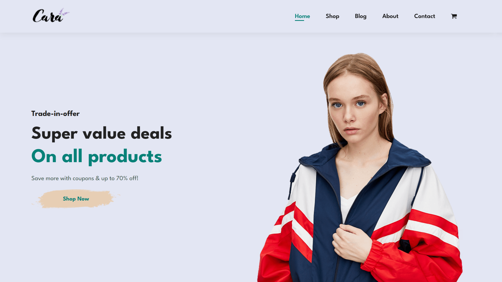
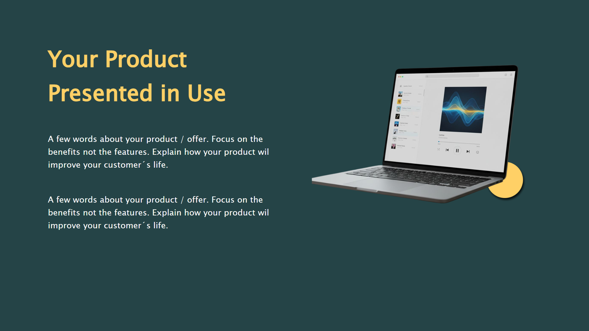
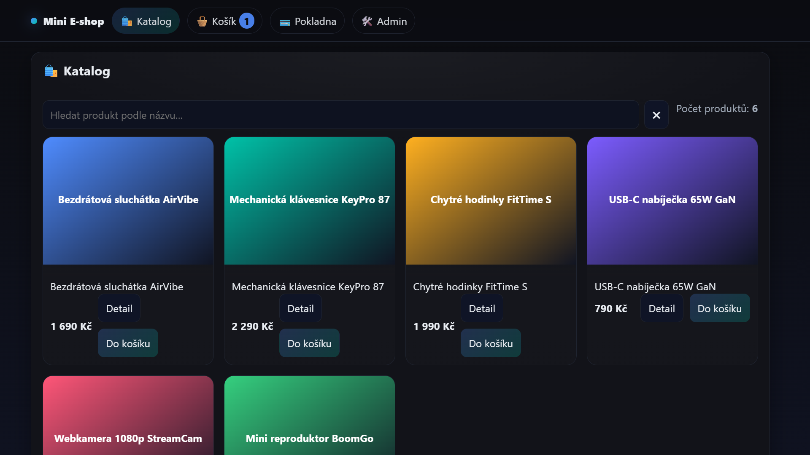
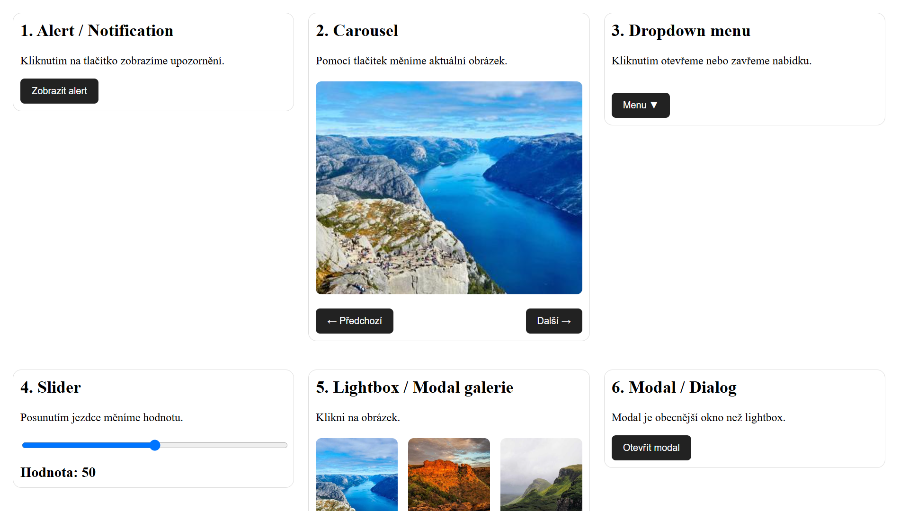

Zprovoznění statického webu
19. 9. 2026
Dokončeno: oprava nefunkčních prvků a kontrola JavaScriptu.
Další úkol: refaktorizace komponent.
Jsem začínající front-end developer, který se zaměřuje na HTML, CSS a JavaScript a aktuálně rozvíjí své znalosti v Reactu. Tvořím vlastní webové projekty a interaktivní komponenty, při kterých pracuji s DOM, událostmi, formuláři, daty a uživatelským rozhraním.
Hledám juniorskou nebo trainee pozici, kde bych mohl své dosavadní znalosti využít v praxi, učit se od zkušenějších kolegů a postupně se zapojovat do vývoje skutečných projektů.

19. 9. 2026
Dokončeno: oprava nefunkčních prvků a kontrola JavaScriptu.
Další úkol: refaktorizace komponent.

19. 9. 2026
Dokončeno: kód obnoven ze zálohy na Google Disku a připraven k další analýze.
Další úkol: prověřit strukturu a pojmenování souborů v kontextu grafického manuálu.

19. 9. 2026
Dokončeno: vytvořena čistá verze kódu, provedena analýza uživatelských akcí a funkcí, které na jednotlivé akce reagují.
Další úkol: provést detailní rozbor funkce renderDetail() a navazujících funkcí včetně jejich vzájemných vazeb a toku dat.

19. 9. 2026
Dokončeno: všech 16 komponent seskupeno do jednoho HTML souboru. Upraveno zarovnání komponent k hornímu a dolnímu okraji.
Další úkol: postupně znovu implementovat JavaScriptovou funkcionalitu jednotlivých komponent a procvičit jejich ovládání prostřednictvím DOM API a konzole.
Samostatně pracuji na analýze, opravách a postupném rozšiřování existujících webových projektů. Zaměřuji se především na HTML, CSS a JavaScript a na porozumění tomu, jak jednotlivé části aplikace spolupracují.
V rámci vlastních projektů se věnuji zejména:
U projektů se nesoustředím pouze na výsledný vzhled, ale také na pochopení struktury kódu, jeho funkcí a vzájemných vazeb. Projekty průběžně ukládám do GitHubu a používám je jako praktický základ pro další studium front-end vývoje.